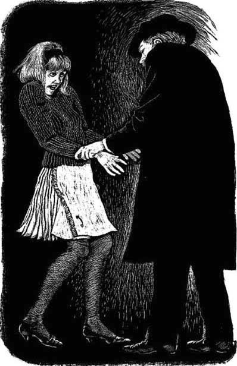

12
Listen to Part 1:

Anna chờ tin tức
Anna chờ một số tin tức về anh Riseman. Cô nhớ lại Greta Gordon. Ngôi sao điện ảnh đó đã đến thăm Tiệm góc phố. Sau đó, có tin tức về cô ấy trên tạp chí. Mike Bailey cũng đã đến Tiệm góc phố. Sau đó, có rất nhiều tin tức về anh ta trên TV. Và giờ đây, anh Riseman đã đến Tiệm góc phố. Anna đang chờ một số tin tức về anh.
Cả ba vị khách đều là Khách hàng đặc biệt. Họ đều đã gặp Dave. Họ đều vào phòng Đặt hàng đặc biệt, và họ đều để lại một thứ gì đó cho Dave. Greta Gordon để lại những chiếc nhẫn kim cương. Mike Bailey để lại chiếc vali của mình. Anh Riseman để lại chiếc cặp.

Anh Riseman bước đến trước mặt cô. Anh ta giữ tay cô. Anh ta rất khỏe.
Anna muốn tìm hiểu thêm về ba “Khách hàng đặc biệt” này. Cô nghĩ về anh Riseman. Chiếc vali của anh ta có các chữ cái A.R.I.C.S. Cô hiểu 'A.R'. Nhưng 'I.C.S' là gì? Có lẽ anh Riseman là một doanh nhân và 'I.C.S' là công ty của anh ta?
Anna lục tìm báo chí. Nhưng cô không thấy gì về 'I.C.S'. Cô đọc tạp chí. Cô nghe radio. Cô xem TV. Nhưng không có thông tin gì về 'I.C.S'. Anna chẳng nghe thấy gì. Cô chẳng nhìn thấy gì.
Sau đó, cô có một ý tưởng. Cô quyết định đến London và tìm Arthur Riseman.
Đó là một ngày thứ Sáu. Sáng sớm, cô để lại một mẩu giấy cho Dave. Cô mang mẩu giấy đến cửa hàng.
‘Dave thân mến,’ mẩu giấy ghi, ‘Xin lỗi vì hôm nay mình không đến được. Mình đang đến Lidney. Mình đang mua một số thứ cho đám cưới của mình. Anna.’
Listen to Part 2:
Mẩu giấy không nói sự thật, nhưng Anna không quan tâm.
Anna đi xe buýt đến Lidney rồi đi tàu hỏa đến London. Cô đến Trạm Paddington vào giữa trưa.
Cô xuống tàu và tìm một cái buồng điện thoại. Những chiếc điện thoại ở gần lối vào ga tàu nhưng các buồng đều đầy.
Cô đứng đợi.
Rồi Anna nhìn thấy những chữ cái 'I.C.S'. Đó rồi! Chúng hiện trên một quảng cáo lớn. Anna đã tìm thấy câu trả lời cho vấn đề của mình.
Dịch vụ máy tính quốc tế! I.C.S. Có lẽ đó là công ty của anh Riseman.
Ngay sau đó, một trong những buồng điện thoại trống. Anna gọi đến số 222 8959.
Những chữ cái hiện trên một quảng cáo lớn. Anna đã tìm thấy câu trả lời cho vấn đề của mình.
‘I.C.S. Tôi có thể giúp gì cho bạn?’ một giọng phụ nữ nói.
Listen to Part 3:
‘Vâng, làm ơn,’ Anna nói. ‘Tôi muốn nói chuyện với anh Riseman. Anh Arthur Riseman. Tôi nghĩ anh ta làm việc tại I.C.S.’
Người phụ nữ cười. ‘Làm việc ở đây ư? Vâng, anh ta làm vậy!’ cô ta nói. ‘Anh ta là Phó chủ tịch của công ty. Đợi một chút nhé. Tôi sẽ gọi cô thư ký của anh ta.’
Sau đó, có một giọng phụ nữ khác ở đầu dây.
‘Thư ký của anh Riseman đây. Tôi có thể giúp gì cho bạn?’
‘Vâng, làm ơn,’ Anna nói. ‘Tôi muốn nói chuyện với anh Riseman.’
‘Ai gọi vậy?’ cô thư ký hỏi.
‘Anh Riseman không biết tên tôi,’ Anna trả lời.
‘Anh Riseman có đang chờ cuộc gọi của bạn không?’ cô thư ký hỏi.
‘Không, anh ta không’, Anna nói.
‘Tôi không nghĩ anh ta có thể nói chuyện với bạn ngay bây giờ,’ cô thư ký nói. ‘Anh ta đang họp và trong một giờ nữa, anh ta sẽ bay đến Thụy Sĩ.’
Listen to Part 4:
‘Nhưng tôi phải nói chuyện với anh ta trong vài phút,’ Anna nói.
Cô thư ký phát cáu. ‘Không thể nào,’ cô ta nói. ‘Nhưng tôi có thể ghi lại một tin nhắn.’
‘Không, cảm ơn,’ Anna nói. ‘Tôi sẽ gọi lại vào tuần sau. Anh Riseman sẽ có mặt ở đó chứ?’
‘Có chứ,’ cô thư ký trả lời. ‘Tạm biệt.’ Và cô ta cúp máy.
Anna đã tìm thấy công ty của anh Riseman. Nhưng cô vẫn chưa nói chuyện với anh ta.
Anna dành buổi chiều ở London. Cô đi xem phim. Sau đó, cô uống trà ở một quán cà phê nhỏ gần Trạm Paddington. Tàu hỏa của cô rời London lúc sáu giờ rưỡi. Cô mua một tờ báo buổi tối và lên tàu.
Anna mệt mỏi, nhưng cô cảm thấy vui. Sau vài phút, cô xem tờ báo của mình. Anna đang chờ một số tin tức. Đó rồi, trên trang nhất:
Mục lục
- Trang bìa
- Trang tiêu đề
- Trang bản quyền
- Mục lục
- Các nhân vật trong câu chuyện này
- 1. Người lạ mặt ở Woodend
- 2. Cuộc họp tại làng
- 3. Cửa hàng ở góc
- 4. Nữ khách hàng xinh đẹp
- 5. Trang trong 'Tin tức phim ảnh'
- 6. Nụ hôn vội
- 7. Lệnh đặt hàng đặc biệt khác
- 8. Trận bóng
- 9. Cuối tuần bí mật
- 10. Cuộc cãi vã
- 11. Arthur Riseman
- 12. Anna chờ tin
- 13. Phòng các đơn đặt hàng đặc biệt
- 14. Các khách hàng đặc biệt
- 15. Ngày 31 tháng 10
- Những điểm hiểu